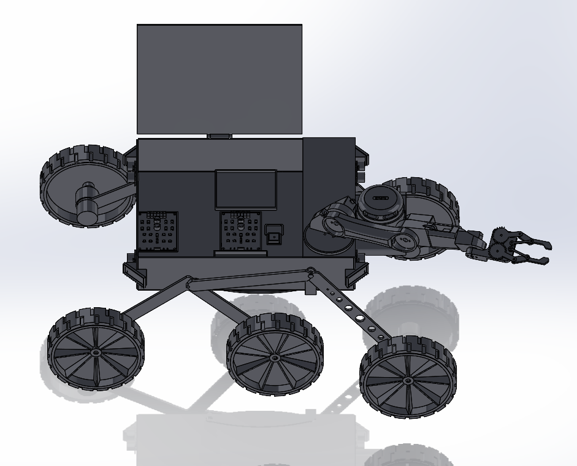

NASA HERC Remote-Control Rover
- Time frame
- 2026 – 2027
- Role
- Design Lead, 10-person team
- Tools
- SolidWorks, Onshape, 3D printing
Texas Tech's entry in NASA's Human Exploration Rover Challenge. The rover has to cross rough terrain under a 60 lb limit, then line up on a marker, decode a radio command sequence, and run it on its own.
- Suspension: trailing arms with dampers up front, rocker-bogie in the rear, plus two rear wheels on a servo-driven axle that fold down for rough ground.
- Drivetrain: 4WD with 8 BLDC motors and servo crabwalk steering. The driver switches between tank, standard, and crabwalk modes.
- Wheels: aluminum hub, spokes, and ring wrapped in a ribbed, compliant TPU tread.
- Chassis: aluminum frame with a center X-brace, electronics boxed in the middle, battery center-back for balance.
- My role: engineered the chassis, suspension, and steering layout, and run three integration meetings a week to take the team through Design Review.